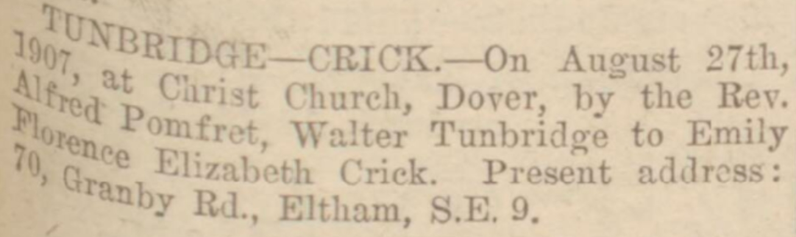

Emily Florence Elizabeth Tunbridge (née Crick) 1875 - 1935
[ Home ] | [ Calendar ] | [ Surnames Index ] | [ Family History ]Emily Crick, the wife of Walter Tunbridge (the first cousin twice-removed on the father's side of Nigel Horne), was born in Dover, Kent, England on Dec 1, 1875<span class="citation">1</span>, was baptized there at St Mary The Virgin on Apr 2, 1876 and married Walter (a van driver grocers with whom she had 2 children: <a href="I1276.html">Florence Elizabeth</a> and <a href="I1275.html">Grace Clara</a>, along with 1 surviving child) at Christ Church, Hougham, Kent, England on Aug 27, 1907<span class="citation">3</span>.</p><p>Throughout her life, Emily lived in several places: on Noahs Ark Road in Dover on Apr 2, 1911<span class="citation">5</span>; on Granby Road, London, Kent in 1921<span class="citation">1</span>; and on 70 Granby Road, Eltham, London, England on Jun 19, 1921<span class="citation">1</span>. <p>She died on Oct 25, 1935 in Woolwich, London<span class="citation">2</span> and was buried in Greenwich, London on Oct 30, 1935<span class="citation">4</span>.
Children
- Grace Clara was born on Feb 12, 1911
Citations
- 1921 Census Of England & Wales - Findmypast (was age 45 and the wife of the head of the household)
- England & Wales deaths 1837-2007 - Findmypast
- 1911 England Census Online publication - Provo, UT, USA: Ancestry.com Operations, Inc., 2011.Original data - Census Returns of England and Wales, 1911. Kew, Surrey, England: The National Archives of the UK (TNA), 1911. Data imaged from the National Archives, London, England.
- <a href="https://www.deceasedonline.com/servlet/GSDOSearch?DetsView=Summary&src=ext&fileid=3611211">https://www.deceasedonline.com/servlet/GSDOSearch?DetsView=Summary&src=ext&fileid=3611211</a>
- 1911 Census for England & Wales - Findmypast (was age 35 and the wife of the head of the household)
Media
26 Aug 1932 - Dover Express - Silver Wedding Notice

Kent marriages and banns - GBPRS/CANT/M/97058686/2
England Births & Baptisms 1538-1975 - R_884198937
Kent Baptisms - GBPRS/CANT/B/96090467
England & Wales births 1837-2006 - BMD/B/1876/1/AZ/000134/240
England & Wales marriages 1837-2005 - BMD/M/1907/3/AZ/000095/122
England & Wales deaths 1837-2007 - BMD/D/1935/4/AZ/000972/135
Family Tree

Generated by Ged2Site. Last updated on Jul 20, 2025